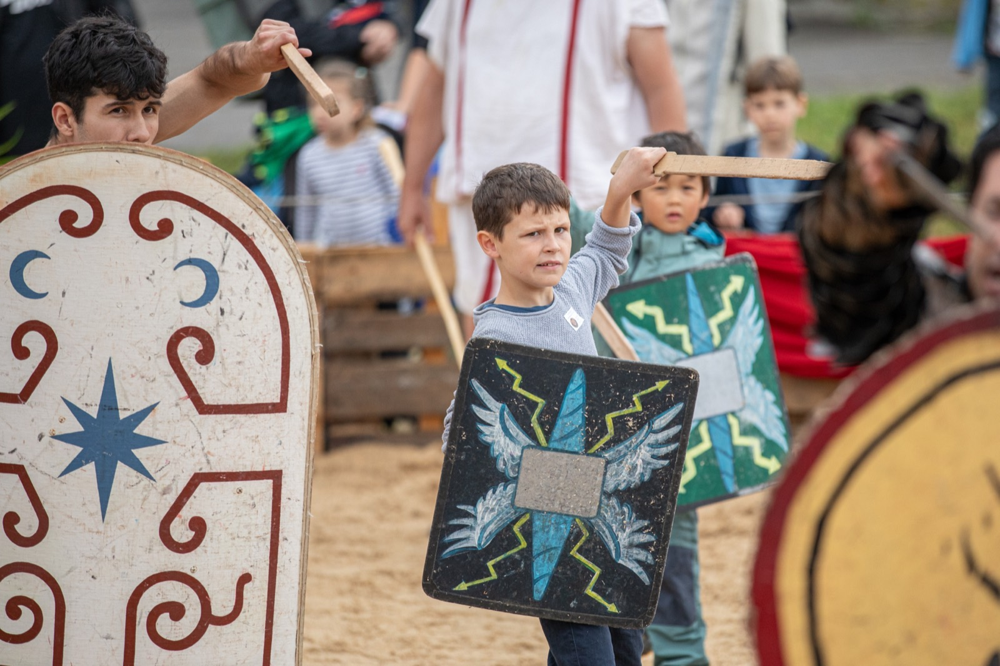
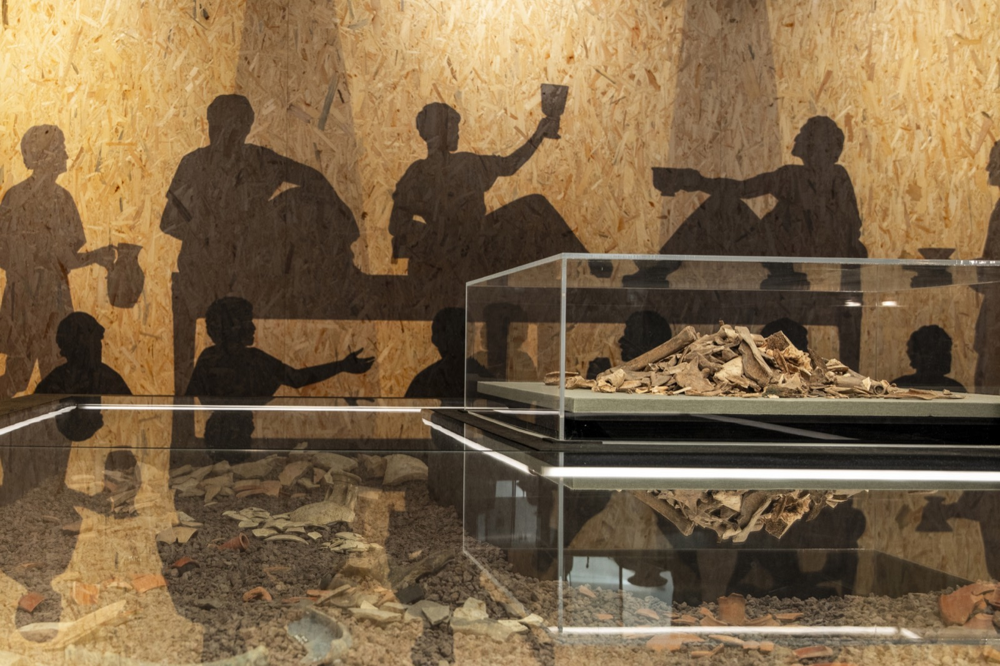
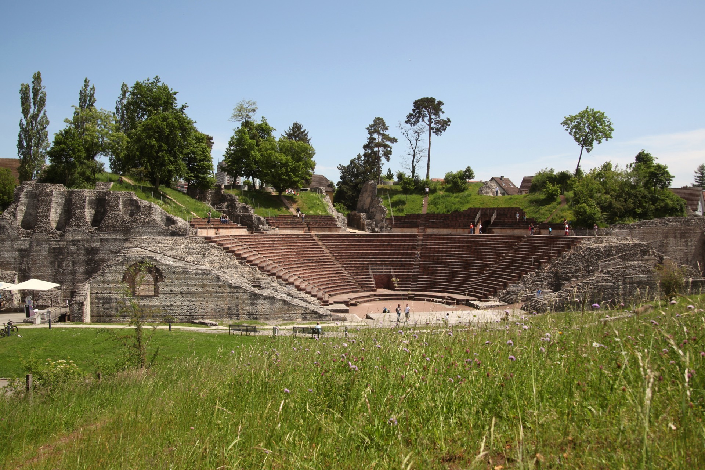

Aktuell in Augusta Raurica
Alle Angebote-

Römer Weekends. Drei Wochenenden römisches Leben im Oktober.
-

Theater im Theater: Römische Komödie unter freiem Himmel.
-

Neue Ausstellung: Was Scherben über den Alltag erzählen.
-

Kochen wie die Römer: Workshop für Gruppen.
-

Das Theater von Augusta Raurica.